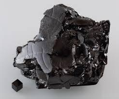

Propiedades físicas: símbolo C. Es un sólido a temperatura ambiente (no magnético).
Su apariencia tiene tonos oscuros. Es incoloro (diamante). Es un no metal. Punto de fusión: 3823 Kelvin (diamante) 3800 Kelvin (grafito)
Punto de ebullición: 5100 Kelvi
Propiedades químicas: El carbono elemental es una sustancia inerte, insoluble
en agua.
A temperaturas elevadas se combina con el oxígeno para formar
monóxido de carbono o dióxido de carbono.
Ocurrencia en la naturaleza:
Se encuentra en el 50 por ciento de todos los tejidos de los seres vivos
y está presente en las cuatro grandes esferas del planeta: la biosfera,
la atmósfera, la hidrosfera y la litosfera, las rocas y el agua.
Video